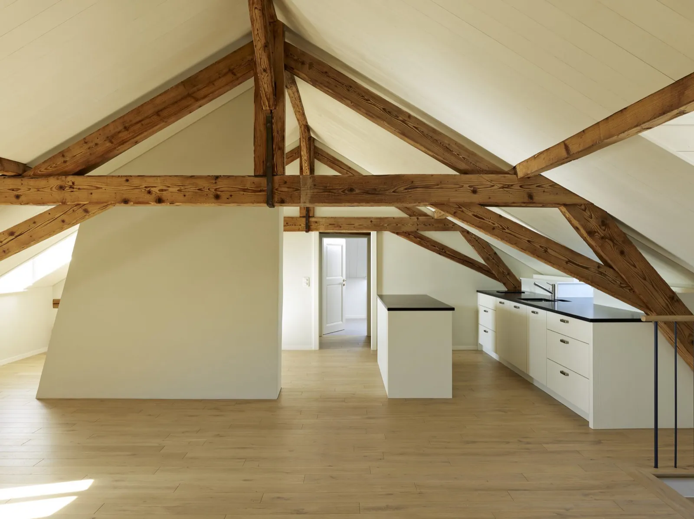
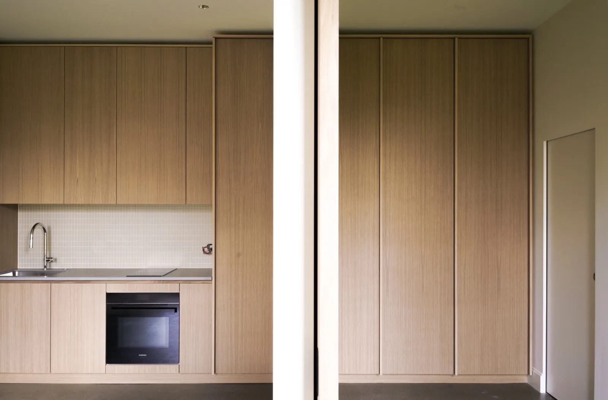
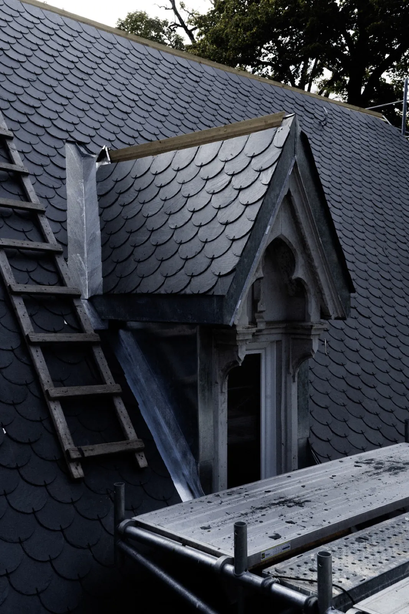
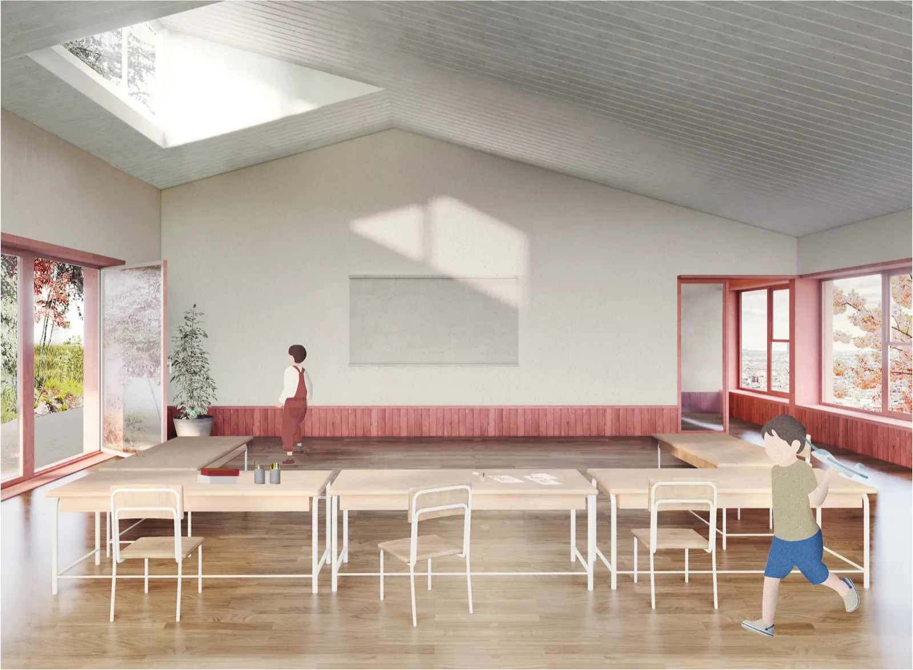
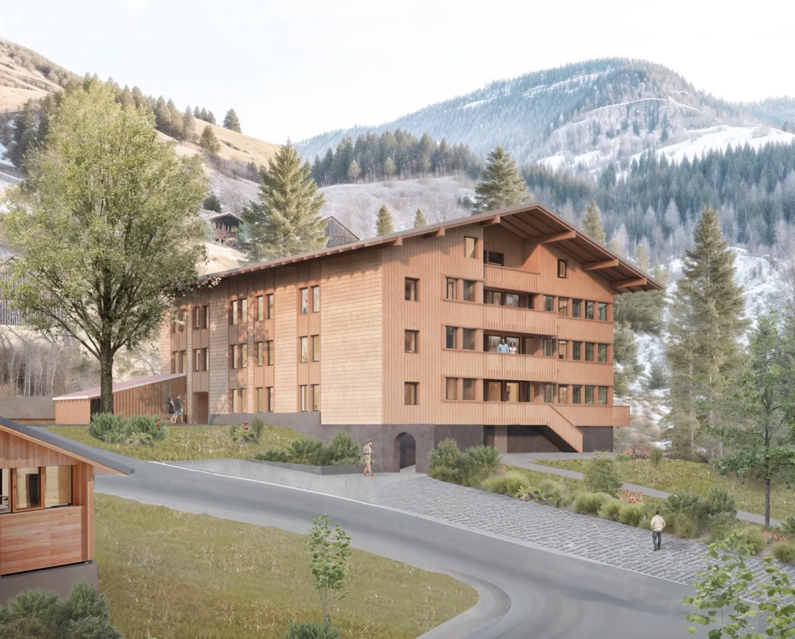

01
Extension d'une villa familiale
Mies · VaudTransformation

Accueil · Projets
Résidentiel, patrimoine et équipements publics sur La Côte et en Suisse romande. Cliquez un projet pour l'ouvrir.
Mies · VaudTransformation

Prangins · VaudPublic · éco-construction

Féchy · Vaud1er prix

Suisse romandeRésidentiel

La Côte · VaudTransformation

Broc · FribourgConcours

Lausanne · VaudConcours

Rossinière · VaudConcours